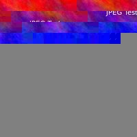

Baseline DCT SOF0 (0xFFC0)
- Precision:
- 8-bit
- Entropy coding:
- Huffman
- DCT block:
- 8x8
Expected: Should work in ALL browsers. This is the most basic JPEG format.
Progressive DCT SOF2 (0xFFC2)
- Precision:
- 8-bit
- Entropy coding:
- Huffman
- Scan mode:
- Multiple progressive scans
Expected: Should work in ALL browsers. Progressive is widely supported.
Extended Sequential (16x16 DCT) SOF1 (0xFFC1)

- Precision:
- 8-bit
- Entropy coding:
- Huffman
- DCT block:
- 16x16 (non-standard)
Expected: May fail or display incorrectly. 16x16 DCT blocks are rarely supported.
12-bit Precision SOF1 (0xFFC1)

- Precision:
- 12-bit (extended)
- Entropy coding:
- Huffman
- Use case:
- Medical imaging (DICOM)
Expected: Should FAIL in all browsers. 12-bit precision requires special decoder builds.
Arithmetic Coding SOF9 (0xFFC9)
- Precision:
- 8-bit
- Entropy coding:
- Arithmetic (5-10% better compression)
- History:
- IBM patent expired ~2007
Expected: Should FAIL in all major browsers. Arithmetic coding is explicitly
disabled in Chrome's and Firefox's libjpeg-turbo builds.
CMYK 4-component SOF0 (0xFFC0)
- Precision:
- 8-bit
- Components:
- 4 (CMYK colorspace)
- Color display:
- May show inverted/wrong colors
Expected: May decode but display with wrong colors. Browser CMYK-to-RGB
conversion varies.